SoundRave
SoundRave was an aggregator app for new music released by a user's followed artists on Spotify. At the time, the news feed was missing from Spotify's features. The app aimed to fill in this hole.
The UI is primarily rendered by the server via the Express framework for Node.js. For data persistence, MongoDB is used as the database and cache for Spotify API calls.
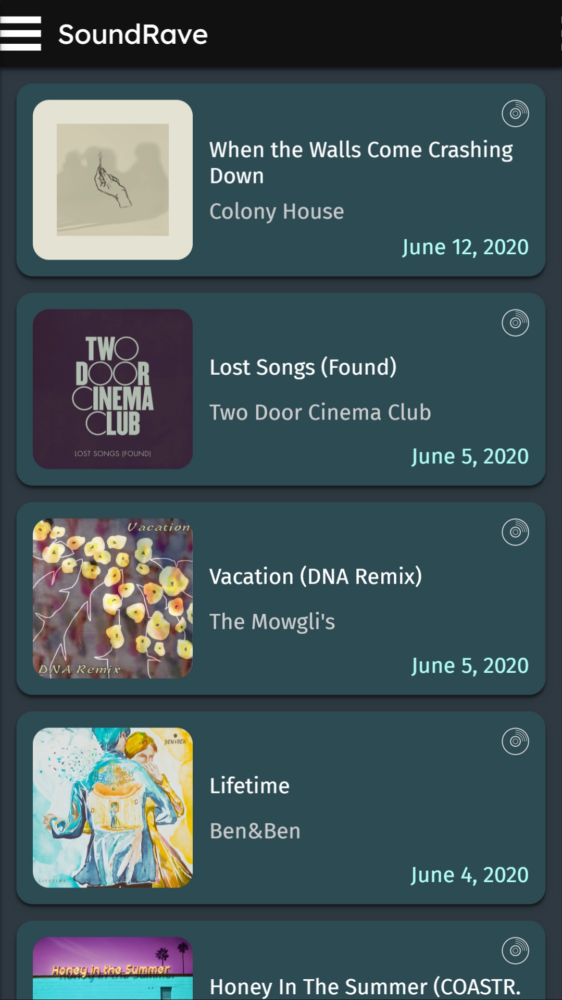
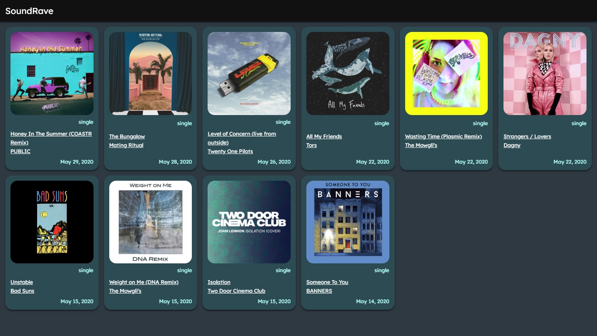
DocTrack
DocTrack is a mobile-first document tracking system built for the modern age. It reimplements and improves on the DRS by the UP ITDC by leveraging PWA technologies for:
- Delivering push notifications via the Web Push API.
- Maintaining an offline experience via Service Workers.
Wherever possible, the project utilizes a TypeScript-centric application stack. With Svelte in the front end, TypeScript ensures that events, messages, and interactions between UI components remain consistent. In the back end, Deno facilitates the development of robust type-safe HTTP request handlers for the REST API.
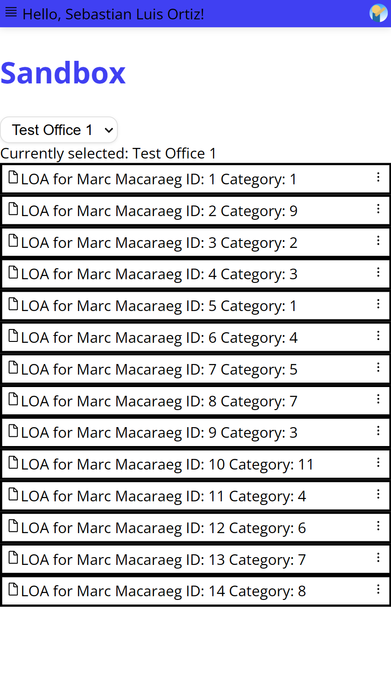
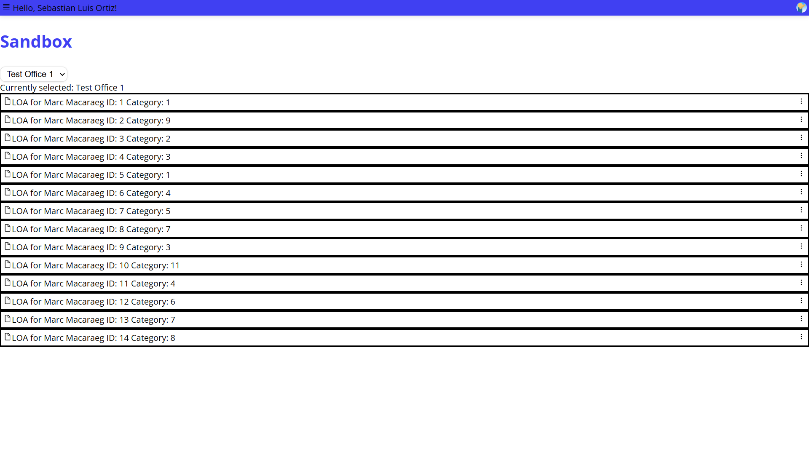
Chrozone
Chrozone is a Tokio-powered Discord bot written in Rust that provides time-based utilities via slash commands. One of its primary features is to format a given date as a dynamic timestamp message (as seen in the screenshots below).
For global Discord communities that have special timezone considerations, Chrozone empowers users to send timezone-adaptive announcements. No need to convert the timezones yourself! Let Chrozone do the work.
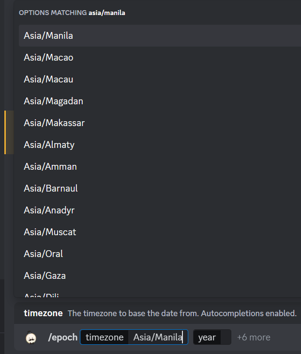
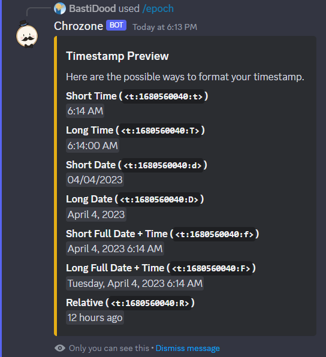
Quizzo
Quizzo is a Tokio-powered Discord bot written in Rust for hosting limited-time quizzes. With Discord's built-in message components, Quizzo provides an easy-to-use interface (and a trivially scalable setup) for large-scale quizzes with many users. When the quiz timer expires, Quizzo notifies everyone in the channel which users answered the quiz correctly. The pioneer use of message components differentiates Chrozone from the other bots in the market which use clunky reaction-based polling mechanisms.
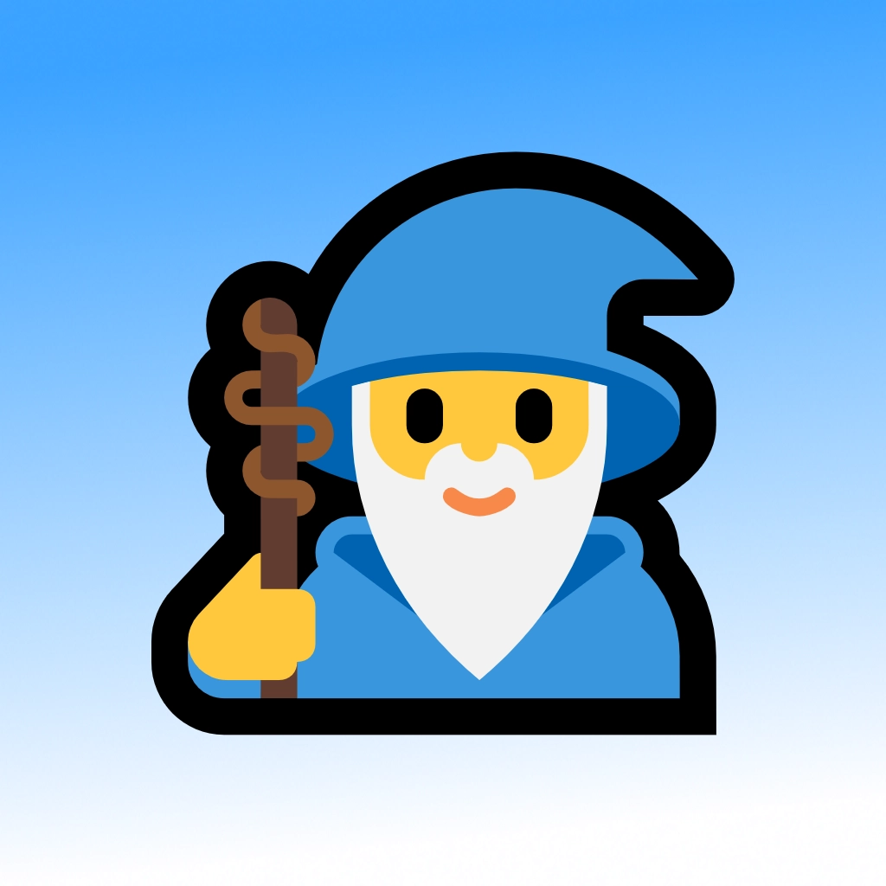
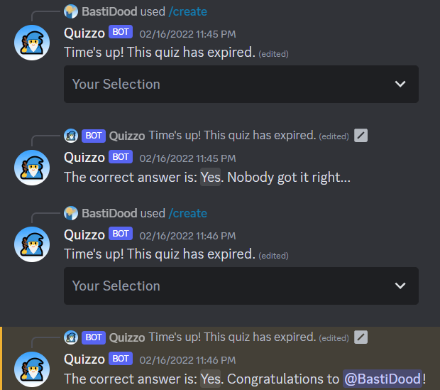
UDP Multicast Chat
The UDP Multicast Chat Project is a basic chat application written in Rust. The front-end GUI uses the popular egui library to render the updates from the back end. Meanwhile, the back end is a Tokio-powered server that listens for UDP messages over a specified multicast address. The same multicast channel is also used for sending new messages. This setup effectively allows multiple hosts in the local area network to communicate with each other via a common UDP multicast channel.
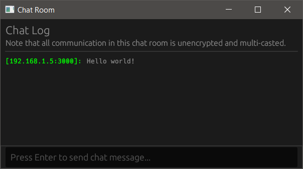
Snake Clone with SDL2
Using the popular SDL2 library, the sdl-basic-snake project reimplements the classic game Snake with modern object-oriented C++20 code.
In line with the theme of modern best practices, the project also uses CMake as its cross-platform build system generator. Assuming the necessary system dependencies have been set up, the project may be built and run on any platform.
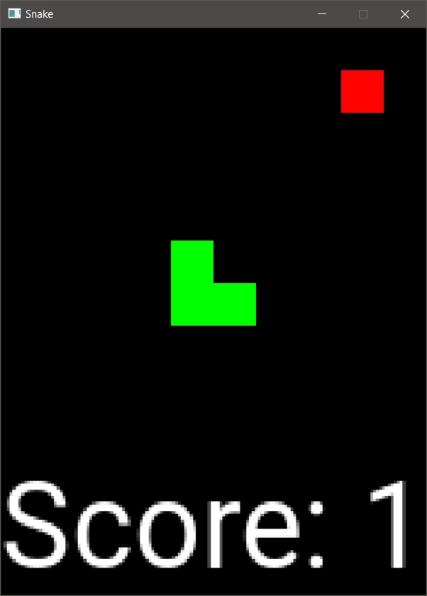
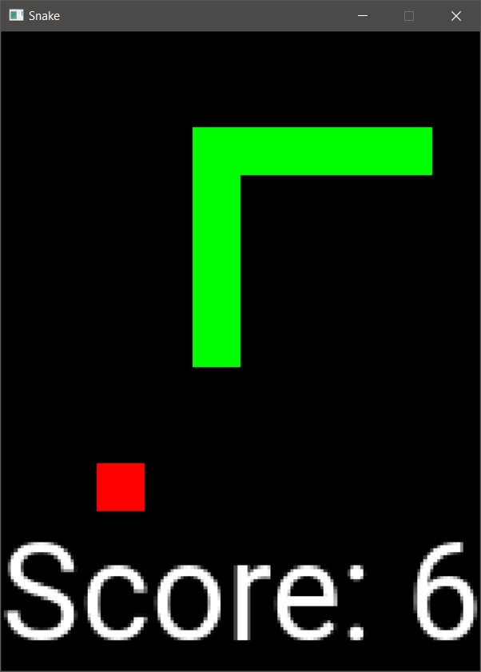
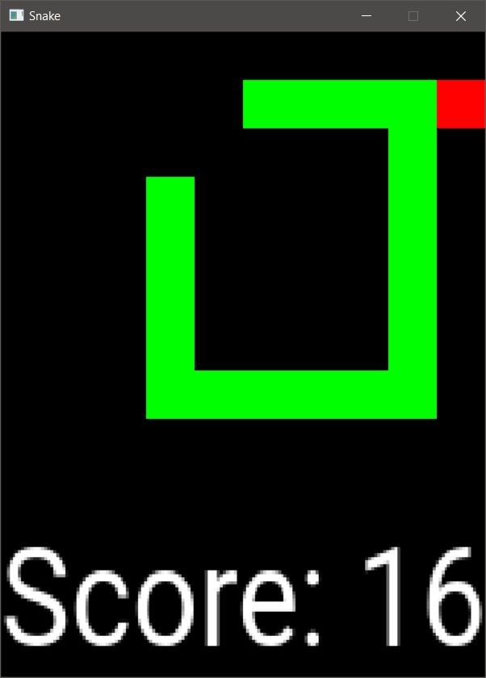
A Block of Optionals!
The option-block crate is an open-source Rust package that provides a basic direct address look-up table, where empty slots are tracked by a single bit mask. Although it is rather simple, this is a fundamental data structure in embedded development, where memory constraints especially matter.
From the pull request dlkj/usbd-human-interface-device#89 by @jedrzejboczar:
Currently,heapless::FnvIndexMapis used to store idle times for reports, which takes 260B (out of 460B for wholeRawInterface) to store at most 32u8values. This PR changes it to useoption-blockwhich basically is[u8; 32]withu32bitmask of "used" slots, which takes 36B (RawInterfaceis now 236B)... In my use case, with 3 HID interfaces, this saves 672 bytes of RAM usage, while I also observed minor improvement in code size—usbd-human-interface-devicetakes 406 bytes less space.